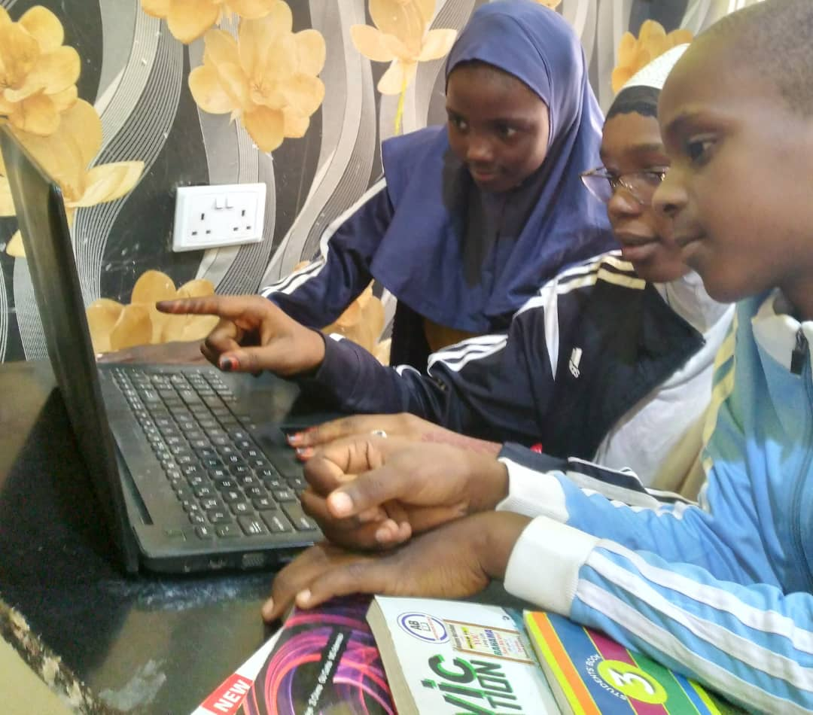

Bakinzuwo, Kano, Nigeria
Arewa Rennaisance Academy
This branch started in 2019/2020 academic session with twelve Junior Secondary School (JSS) students at BakinZuwo – an under-served area of Kano City. In the last three years, the students body grew to about fifty (covering JSS1, JSS2, JSS3, Primary 4 and Primary 5).
